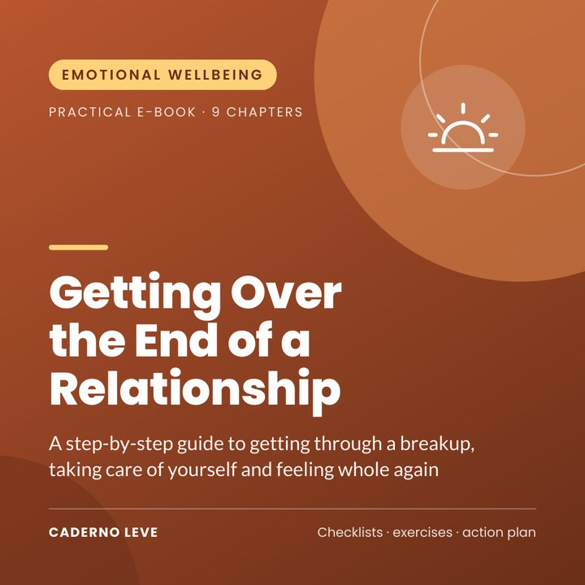

Getting Over the End of a Relationship
A caring step-by-step guide to getting through a breakup: survival kit, no contact, emotions, a new routine and when to seek help. With a 30-day plan.
This e-book will be available to buy very soon.
Secure payment and PDF delivery by Kiwify
Price in Brazilian reais (BRL). The checkout shows the amount in your currency.
Your relationship is over and it feels like the ground has disappeared? It hurts, and it’s normal that it hurts. This e-book helps you get through this phase, one step at a time.
Getting Over the End of a Relationship is a practical, caring e-book for anyone who ended things or was left, after a short relationship or a long marriage.
You get a step-by-step guide for the first few days, guidance on contact and social media, exercises to work through your emotions and rebuild your routine, advice on children and practical matters, and where to turn for support when you need it.
What you’ll gain
- Understand why a breakup hurts so much (and why that isn’t weakness)
- Put together a survival kit for the first few days
- Apply no contact or minimal contact and handle social media
- Work through sadness, anger and guilt with practical exercises
- Rebuild your routine and identity after “us”
- Know when and where to seek help, including in cases of violence
What’s inside
- Chapter 1What happens when a relationship ends
- Chapter 2The first few days: your survival kit
- Chapter 3No contact (or minimal contact) and social media
- Chapter 4Working through your emotions
- Chapter 5Making sense of what happened, without blaming yourself
- Chapter 6Rebuilding your routine and your identity
- Chapter 7When you share children, a home or property
- Chapter 8Opening up to the future, in your own time
- Chapter 9Warning signs and where to get help
- ExtraSummary and action plan to put it into practice
- ExtraPrintable worksheet and checklist
Who it’s for
- Anyone going through a recent breakup, or one that still hurts
- Anyone who shares children or property and needs to organise the new phase
- Anyone who wants practical support for the hard days
Who it’s not for
- It is not a treatment and does not replace psychotherapy, medical care or legal advice
- It does not teach techniques for winning your ex back
Bonus: printable worksheet — survival kit, wave diary and daily checklist, plus a 30-day plan.
Important notice
This e-book is for educational and self-care purposes. It does not diagnose or treat any condition and is not a substitute for therapy or medical care. If your distress is intense, lasts a long time or gets in the way of your life, please reach out to a psychologist, a doctor or your local health service.
If you need to talk to someone right now, contact a local crisis line or helpline. In an emergency, call your local emergency number.